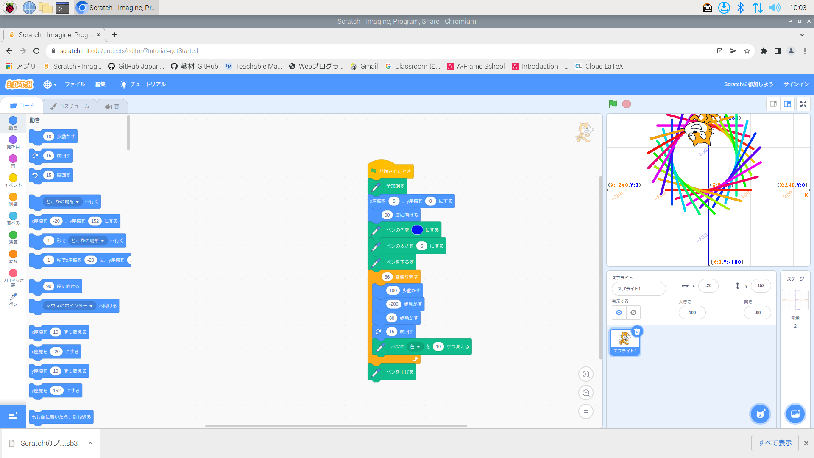
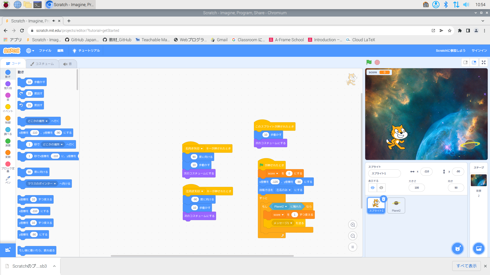

1週目のレポート ： 公大高専１年実習I-1
1組11番 supu-toniku
第1週目
1-1 サイエンスアート

1.内容
スクラッチを使って線を書くプログラムを書いた。
2.感想
スクラッチで線を書くのは簡単だった。規則性のある模様ならほとんど作成することができ、乱数を使えばおもしろそうな模様もできそうだなと思いました。
そして変数を使用すれば徐々に加速したり減速させたりすることができると思いました。
1-2 ゲーム

1.内容
上から土星が落ちてきてそれをねこがキャッチするゲームを作成した。
2.感想
プログラムの内容をりかいすることができた。。乱数をしようすれば、土星の落ちてくる速度をランダムにしたり、いくつか同時に落ちてくることもできそうだった。
そして変数を使用すれば徐々に加速したり減速させたりすることができると思いました。
1-3 ホームページ作成
私のホームページ
1.内容
自分のホームページを作成した。
2.感想
odeでどれがどのような意味があるのかあまりわからなかった。ホームページの作成についてに興味がわき、自分で調べてみようと思いました。